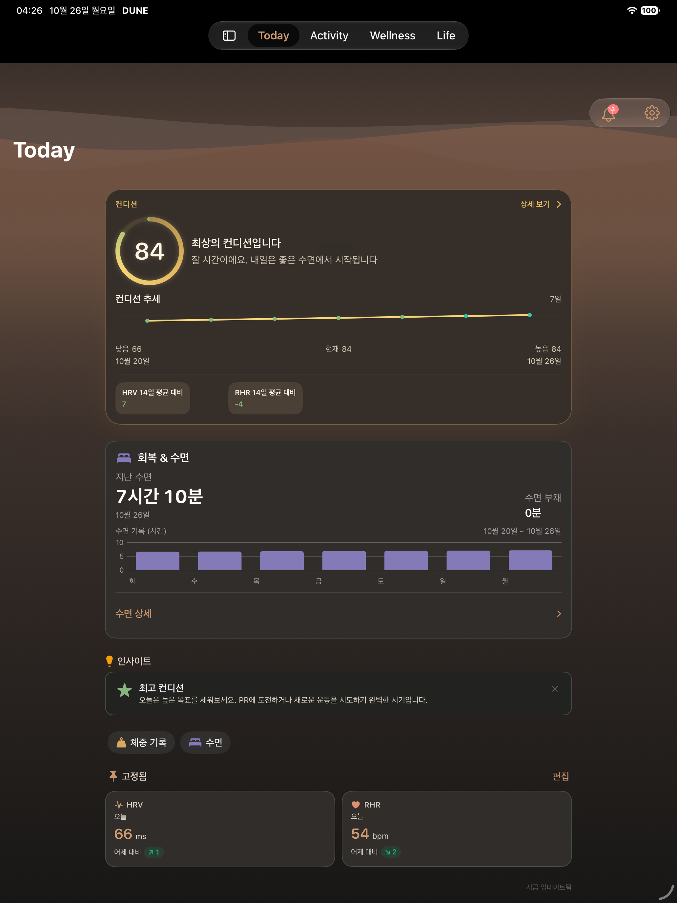
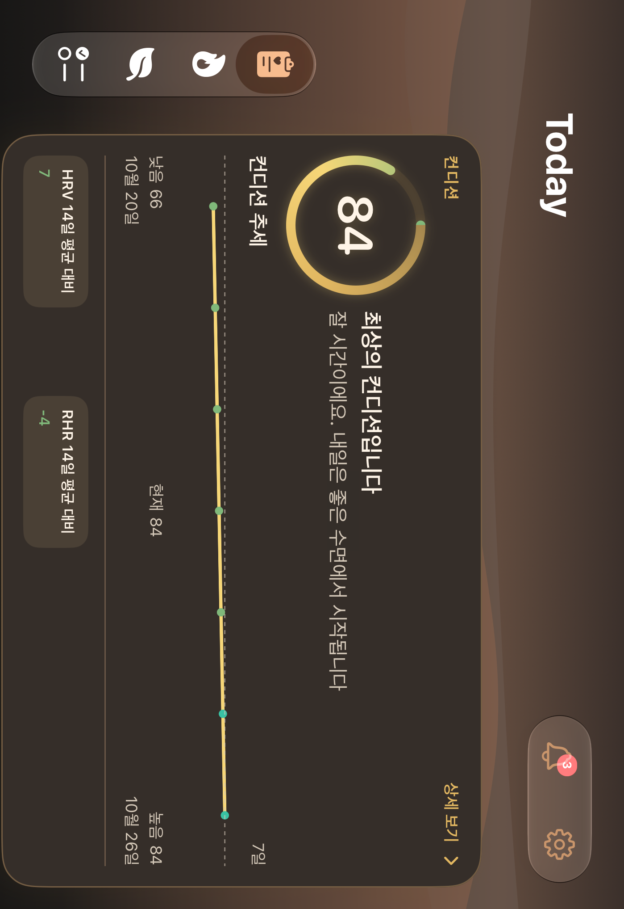
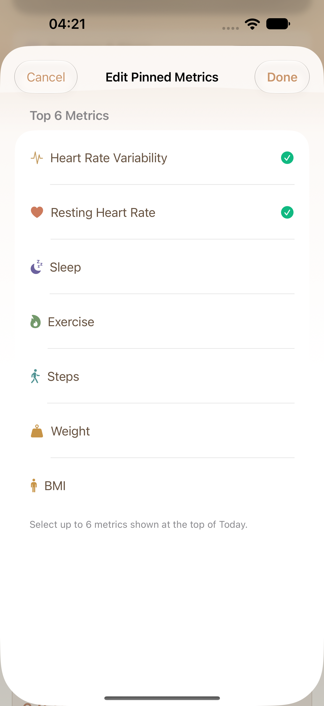
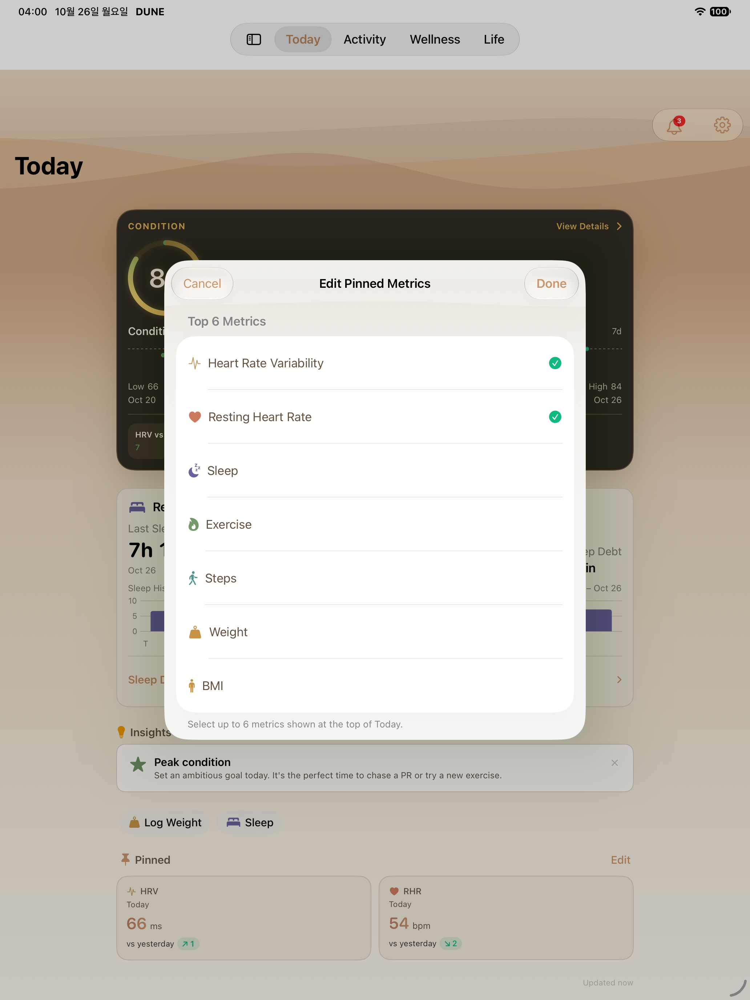
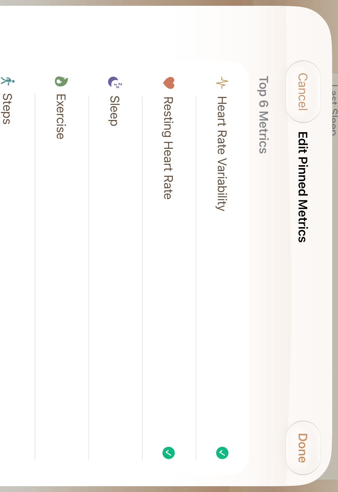
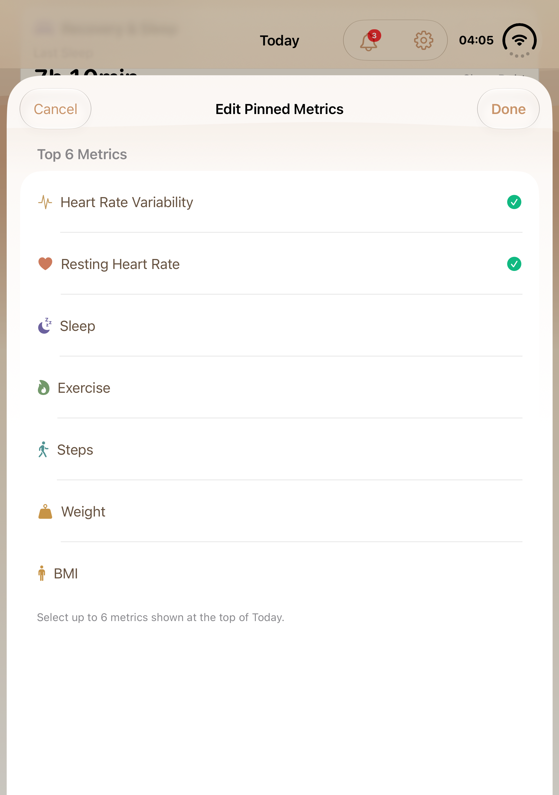
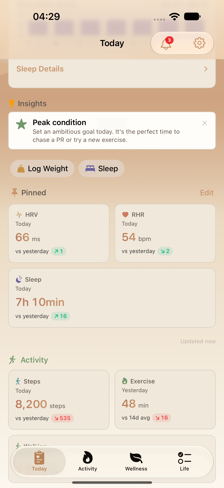

Today Compact · 실제 앱 화면
기본 DUNE 테마를 유지한 네이티브 캡처입니다. 데이터는 테스트 시드이며 브라우저 시안과 구분합니다.
고정 편집 중앙 터치·선택·저장·홀수 카드 전체 폭 검사는 1/1 통과했습니다. 나머지 Today 관련20개도 통과해 관련21개를 정상 종료했고, 최대 글씨 제목 보완 뒤 해당 검사1개도 추가 통과했습니다. Duo 내부 가로는 미검증이며 아래 내부 화면은 세로입니다.
세 시안 비교 · 통합 실제 화면맵 · 출처·해시
iPhone 18 Pro Max [1320, 2868]px · 기본 글씨iPad Pro 13-inch (M5)
[1320, 2868]px · 기본 글씨iPad Pro 13-inch (M5)
[2064, 2752]px · 기본 글씨Duo 외부 · 세로
[1398, 2034]px · 기본 글씨Duo 내부 · 세로 [2006, 2852]px · 기본 글씨
[2006, 2852]px · 기본 글씨 고정 지표 편집
변경된 행 터치 영역·선택 접근성 상태의 실제 화면입니다. 이미지가 선택·저장 동작 검사 통과를 뜻하지 않습니다.
iPhone 18 Pro Max
[1320, 2868]px · 시스템 표시 설정iPad Pro 13-inch (M5)
[2064, 2752]px · 시스템 표시 설정Duo 외부 · 세로
[1398, 2034]px · 시스템 표시 설정Duo 내부 · 세로
[2006, 2852]px · 시스템 표시 설정 고정 세 개 · 홀수 마지막 행
행 중앙 탭 → 수면 선택 → 저장 → 마지막 카드의 좌우 경계가 전체 grid와 같은지 검사했습니다. 기본 글씨 iPhone 검사 결과이며 다른 기기의 홀수 조합 통과로 확대하지 않습니다.

경계 점수·큰 글씨·긴 운동명
전용 iPhone에서 최종 검사에 첨부한 원본 PNG입니다. 현재 표시된 언어·글씨·상태의 근거로만 사용합니다. 20개 최종 receipt · 별도 고정 검사 receipt